Tanishk Salagame · Interaction design
A judgment should
leave a trace.
What does a design judgment select as evidence before it becomes a verdict?
Five fictional interfaces. Two independent looks. An inspectable record of what you noticed, reconsidered and kept.
Self-directed concept, interaction and visual design, authored scenarios, writing and frontend engineering. AI-assisted process, disclosed below.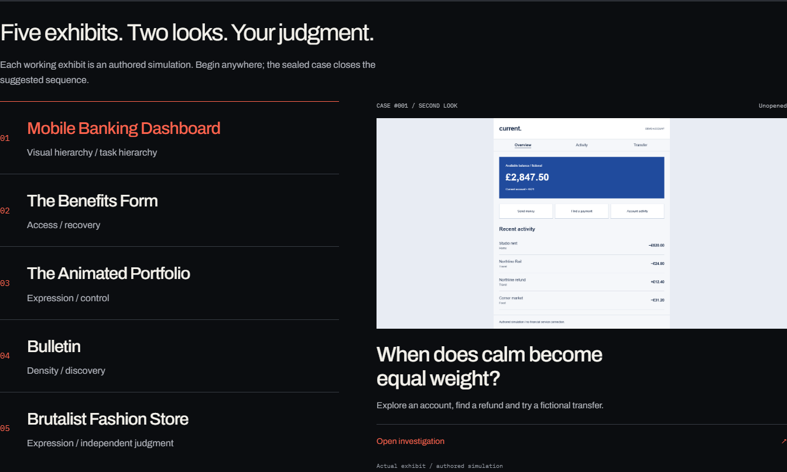
A verdict hides
the route to it.
“Good” and “bad” leave out what a critic noticed, whose task they imagined and which uncertainty they accepted. The project asks visitors to leave evidence between an impression and a verdict.
Version one made attention spatial.
The original ten-case archive let visitors mark a still image and compare five authored positions. But static images could not demonstrate runtime behavior. Preselected lenses could frame attention. Jurors could look like an answer key. One ruling could not show reasoning over time.
These are design limitations, not manufactured findings from user interviews. The original archive and its short path remain available.
The breakthrough:
preserve the first look.
Context can expand a reading without rewriting it. The first judgment is sealed with its evidence. A second judgment requires its own reason and confidence. Keeping the same verdict is equally valid.
- 01Explore and mark
- 02Seal a first call
- 03Open context
- 04Investigate again
- 05Seal a second call
- 06Inspect the record
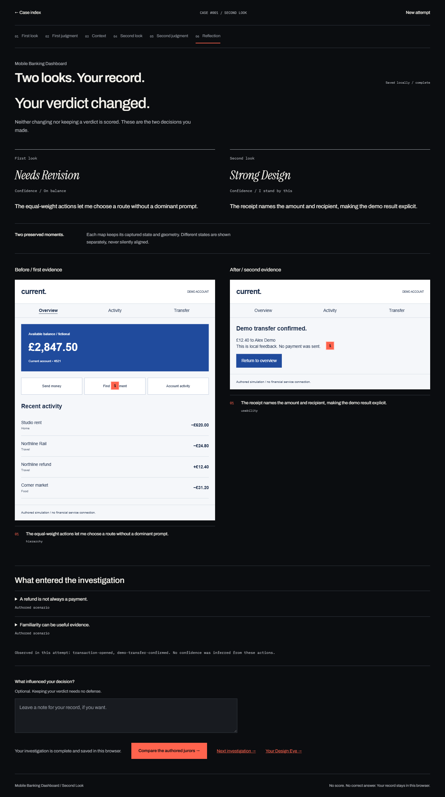
Split.
One object,
two readings.
The opening makes disagreement visible on the interface itself. A direct handle and native range support pointer, touch and keyboard.
The strong typographic cover and its image-bound geometry were retained. No decorative motion was added.
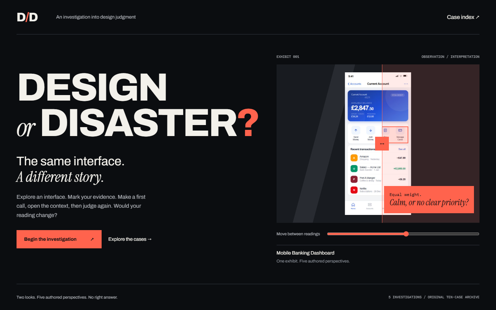
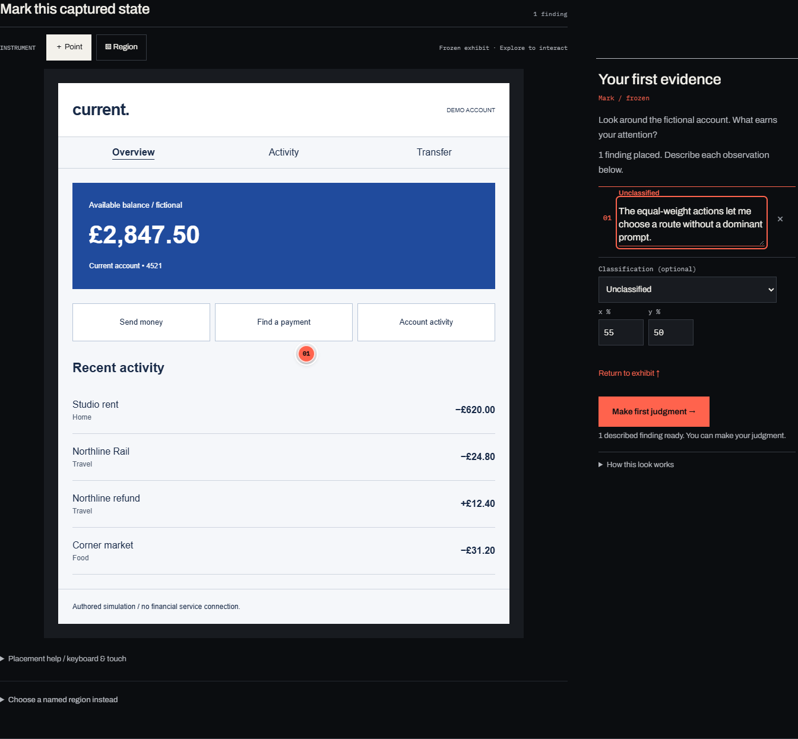
Instrument.
Make evidence
specific.
Explore operates the exhibit. Mark freezes its state. Identifying a control as evidence must not also activate it.
Notes and geometry now sit beside the desktop exhibit. Selecting a mark focuses its observation. On mobile, secondary instructions unfold and the judgment form arrives before optional evidence review.
Named regions, arrow-key placement and numerical editing complement precise pointer input. Small captured text still needs physical-device magnification acceptance.
Reveal.
Inspect the
disagreement.
Visitor and authored evidence occupy an explicitly selected frame. A shared boundary connects conflicting readings of the same element to numbered arguments.
Missing regions are disclosed. Scanner, Advocate, Operator, Skeptic and Romantic are authored positions, not recruited experts.
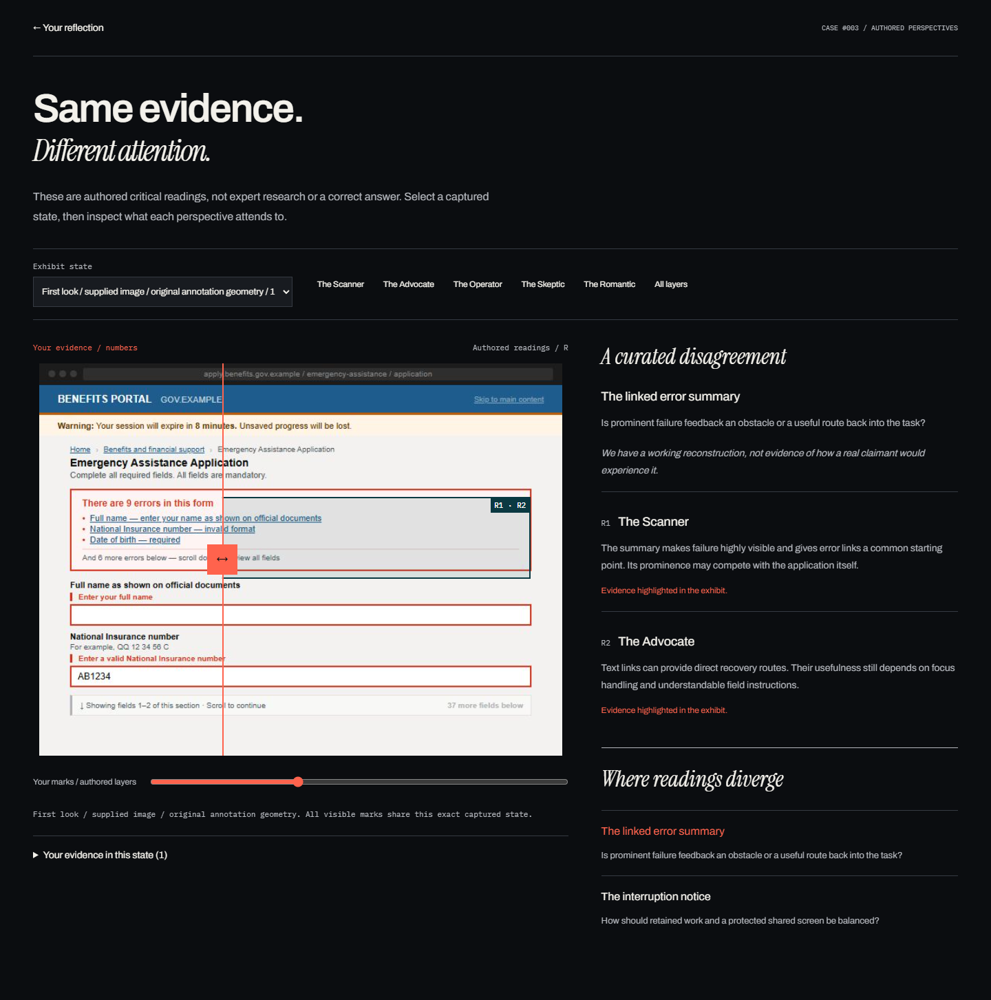
Five worlds.
Five ways to investigate.
The interaction changes with the tension. A bank needs task feedback; a portfolio needs controllable expression. Each exhibit is an authored simulation and sends nothing to a real service.
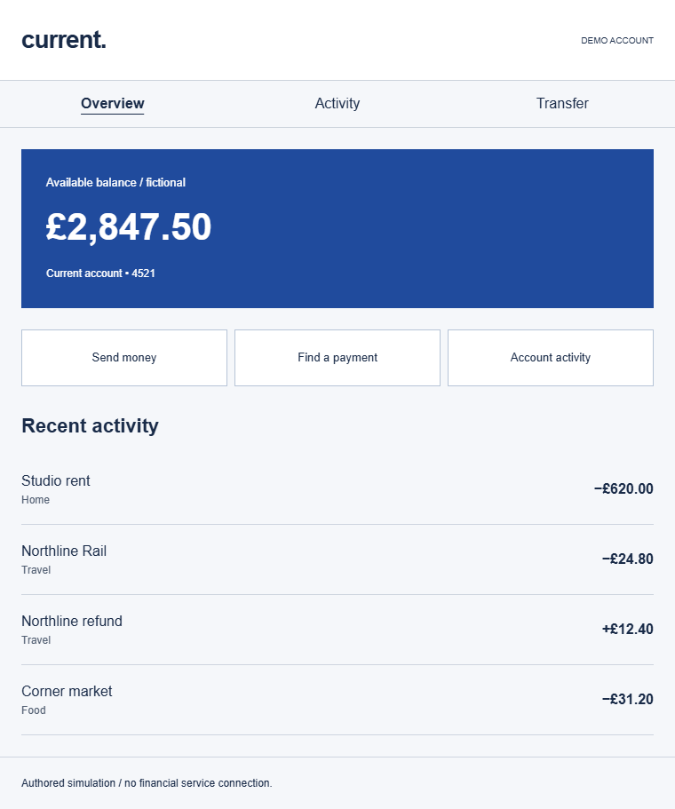
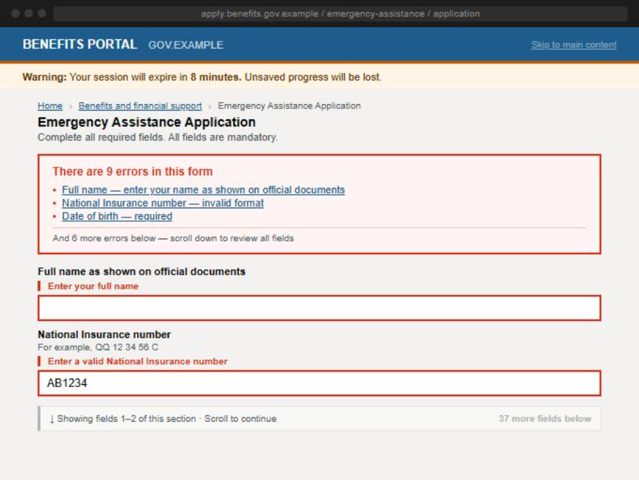
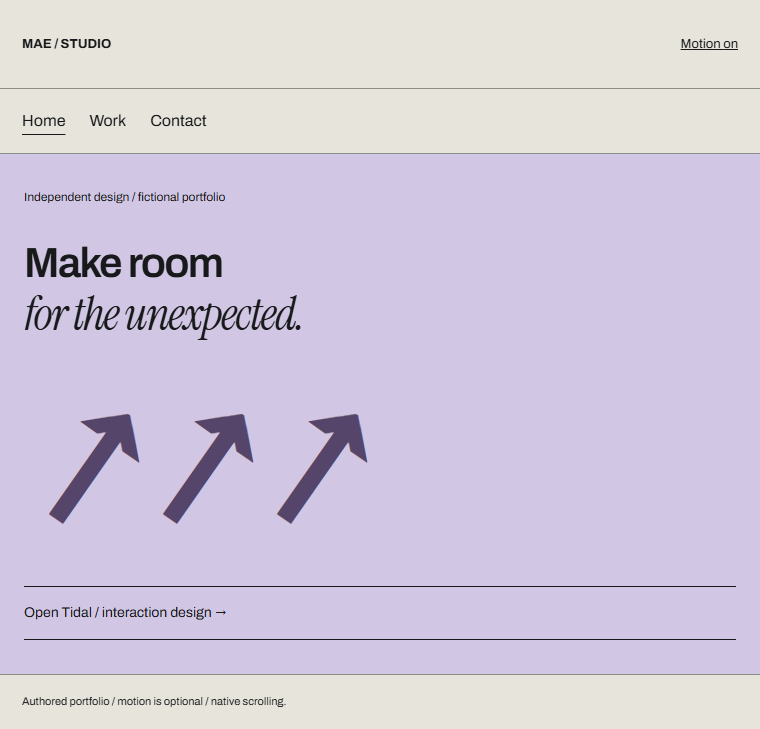
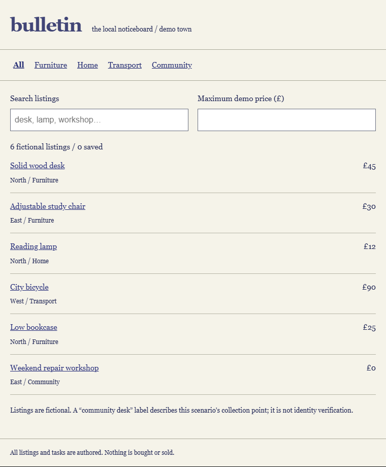
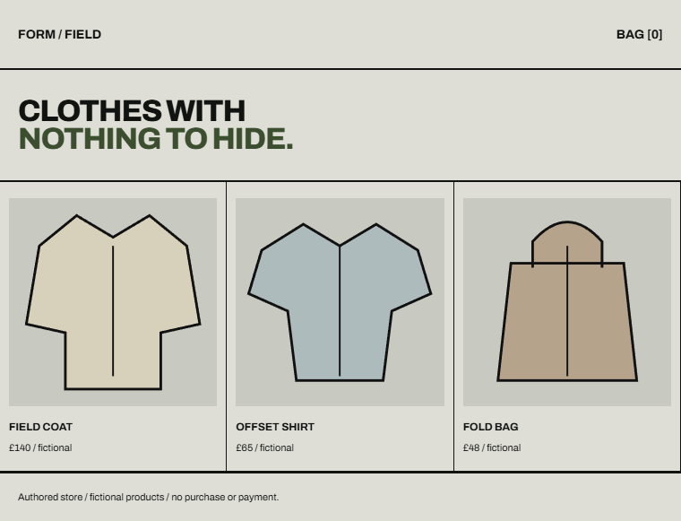
Decisions with
real costs.
- Publication + instrument
- Near-black, warm paper and signal red frame five distinct exhibits. A replacement visual system would weaken that relationship. Direct manipulation stays immediate.
- Freeze before marking
- A captured layout protects evidence from reflow. The trade-off: small exhibit text behaves like image content. Named controls, numerical editing and text observations provide separate routes.
- Local-first records
- No account or submission service. Records belong to a browser profile and are unencrypted; they do not automatically follow a visitor across devices. Reset is deliberate. Downloads remain.
- Independent closure
- Immutable judgments retain the earlier reading. Authored voices expose disagreement. The sealed case removes them. A winning verdict or expertise score would undermine the proposition.
A record
worth keeping.
Design Eye counts actual saved decisions. The compact sheet shows first-to-second verdict patterns and up to two lines from each reason.
Full PNG and PDF retain detail. Portable text HTML preserves notes, judgments, confidence, opened context and reflection offline.
The image is an excerpt. The PDF is not certified accessible. The semantic text edition provides a nonvisual alternative.
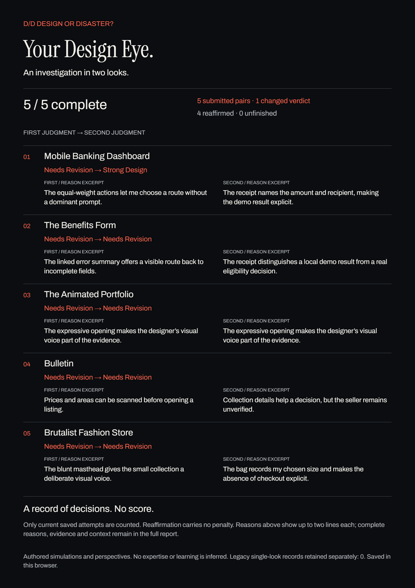
Less distance
between evidence and action.
608 → 251pxObservation to next action
2573 → 1394pxMobile judgment page
Matched Banking states at 390px. These are layout measurements from the same synthetic task. They demonstrate less separation—not measured participant speed, satisfaction or first-time comprehension.
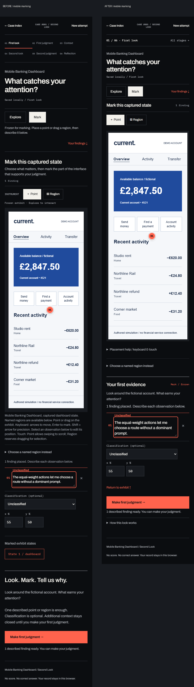
What the evidence
can support.
Implementation evidence
State and geometry tests, real-browser scripted journeys, sequential Tab journeys, automated accessibility scans and actual rendered exports. Agent heuristic review informed the refinements.
Still open
Consented first-time participant sessions, actual screen-reader output, physical touch, genuine Safari and stable Firefox acceptance. Available Firefox runs use Playwright Nightly. A neutral five-person study kit is prepared; no participant findings exist.
Seven earlier reconstruction origins are documented. The final review replaces three uncleared supplied captures with original fictional exhibits. Affected legacy cases disclose the image revision; saved notes and coordinates remain unchanged. Original captures remain uncleared in pre-existing public history. Website publication remains conditional.
Method, source and assistance disclosures
Saved statements shown here are synthetic test entries. The project does not score expertise, infer confidence from behavior, diagnose personality or claim measured learning. Authored simulations do not establish outcomes for real banks, services, sellers or retailers.
AI assisted ideation, critique, writing and code iteration. Tanishk Salagame retains final concept selection, case construction, design decisions, editing and authorship. This pass is agent-led, not an external endorsement.
React, JavaScript, Vite, CSS Modules and browser-local storage support the implementation. This portable presentation uses system typography without external requests. Application fonts remain Archivo, Instrument Serif and IBM Plex Mono. Main portfolio files were not changed.
The useful outcome is a trace another person can question, rather than a score that claims to settle the argument.